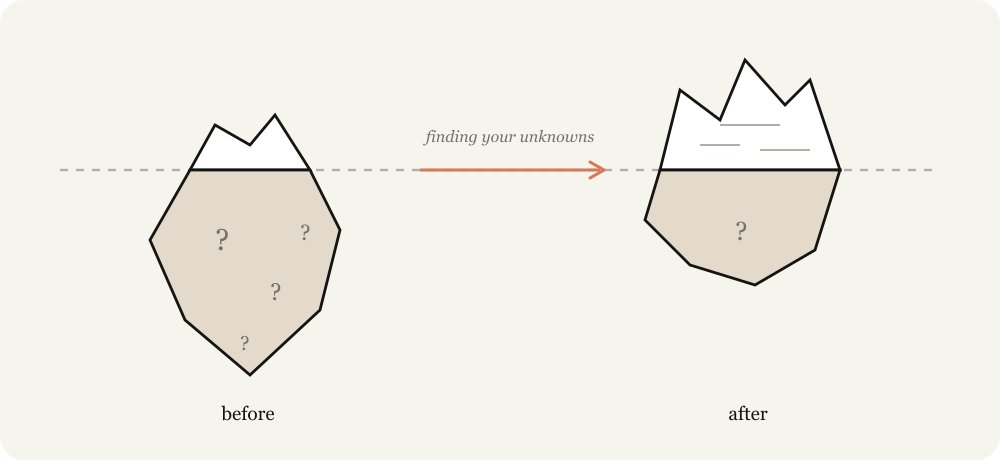
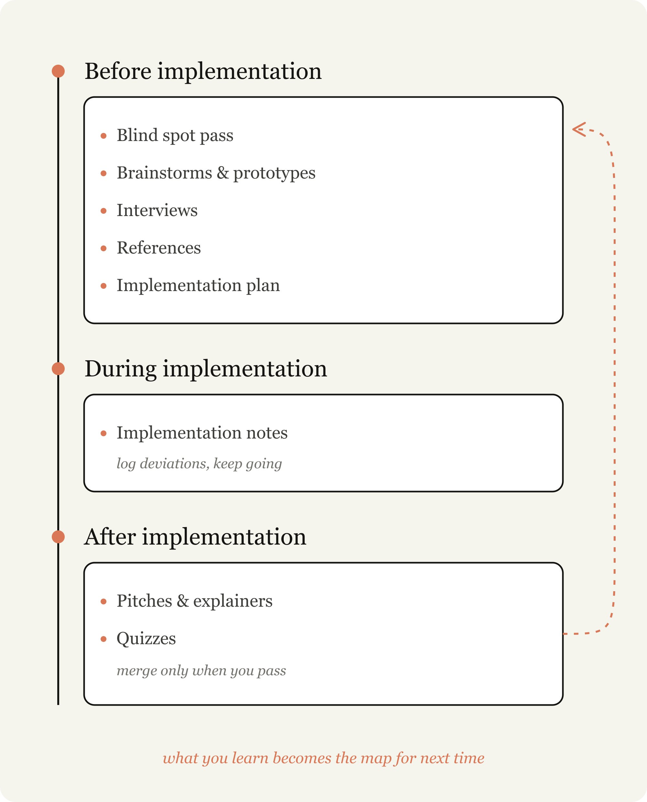
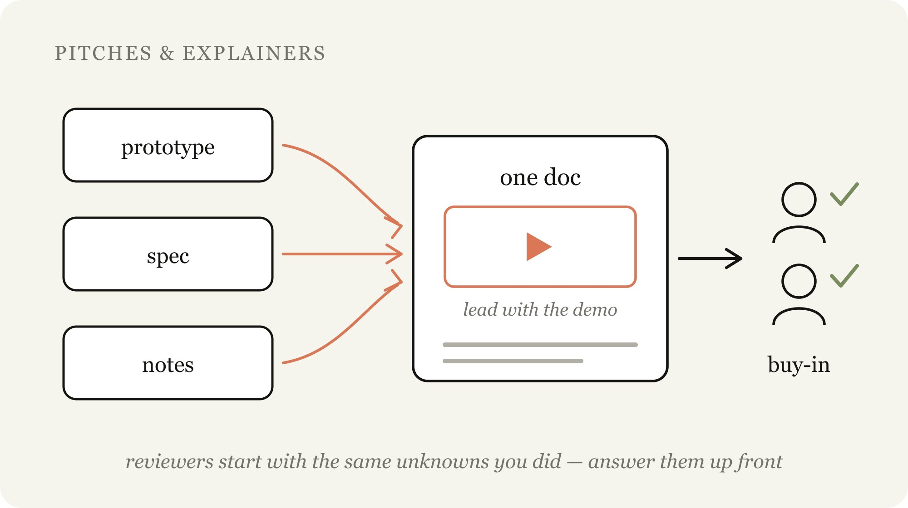

Known knowns
已知的已知
你已经写进提示词的内容：目标、输入、输出、约束、必须遵守的规则。
✓
整理自 Thariq 的 Fable Field Guide
这篇文章的重点不是“写更长的提示词”，而是把 AI 协作中真正会决定质量的东西提前暴露出来：你知道什么、你不知道什么、你以为不用说但其实会影响判断的东西。Thariq 后续补充的 11 个 HTML 示例，则把这个方法变成了一套可以直接复用的工作流。
你给模型的提示词、技能、上下文，只是“地图”；真正要完成的工作发生在代码库、现实世界和约束条件里，那才是“疆域”。地图和疆域之间的差距，就是这篇文章说的“未知”。
模型越强，它能替你走得越远；也正因为走得更远，没被说明的未知会更频繁地变成模型必须自行判断的岔路口。

我们经常把“我已经写清楚了需求”误认为“模型已经理解了真实任务”。但模型看到的只是你提供的材料：提示词、上下文、已有技能、相关文件、你表达出来的偏好。
真正的任务还包括很多没有写进提示词的东西：代码库惯例、团队审美、上线限制、历史包袱、某个产品细节为什么不能改、你看到设计稿时才会意识到的“不对劲”。这些东西没有进入地图，却会决定模型在疆域里怎么走。
AI 协作的质量，常常受限于你能不能把“地图外的东西”尽早找出来。
Thariq 用四象限描述 AI 协作里的未知。对中文用户来说，可以把它理解成：哪些信息已经说清楚，哪些问题自己知道还没想明白，哪些标准只有看见才知道，哪些坑完全没进入视野。

Known knowns
你已经写进提示词的内容：目标、输入、输出、约束、必须遵守的规则。
Known unknowns
你知道自己还没想明白的问题：例如接口怎么设计、数据从哪里来、谁来审批。
Unknown knowns
你心里有标准，但没写出来；比如“这个页面看起来要像内部工具，不要像营销页”。
Unknown unknowns
你没意识到会影响任务的坑：技术限制、领域常识、真实流程里的例外情况。
协作的难点在于分寸：说得太死，模型会机械执行，哪怕执行到一半发现更好的路径；说得太空，模型又会用通用最佳实践替你做选择，而这些选择未必适合你的项目。
比较稳的做法，是先交代你的起点：你对问题理解到哪一步、对代码库熟不熟、哪些地方是你拿不准的、哪些标准你自己也只能通过对比来判断。
这会把模型从“按命令施工的人”变成“帮你一起发现问题的人”。它可以快速读代码、查资料、试错、复盘；你要做的是把它发现未知的能力纳入工作流。

原文的做法可以整理成一个简单循环：实施前降低盲区，实施中记录偏离，实施后把经验转成下一次协作的材料。

当你进入不熟悉的模块、领域或设计任务时，先让模型帮你找“未知的未知”。不要直接让它开工，先问：我可能没想到什么？我该补充哪些背景？哪些问题会改变方案？
视觉、交互、产品感受这类标准，经常属于“未知的已知”。你可能讲不清楚，但能判断哪个更对。先做几个低成本方向或假数据原型，比直接接入真实系统更便宜。
头脑风暴之后仍有不确定，就让模型一次只问一个问题，并优先问那些会改变架构、数据模型、用户流程或验收标准的问题。
如果某个库、页面、组件或工具已经以你想要的方式解决了问题，把参考直接交给模型。截图有帮助，但源代码更好，因为它包含结构、命名、边界和真实实现方式。
再好的计划也会遇到边界情况。让模型在执行时记录关键决策、偏离计划的原因、保守选择和后续风险。这样下次重开会话或交给别人接手时，不会只剩下一堆 diff。
上线、合并或争取支持时，评审者往往从和你一样的未知出发。把你探索过的问题、做过的取舍、演示材料和风险处理放在一份文档里，可以显著降低沟通成本。
长会话结束后，模型可能做了比你意识到更多的事。只看 diff 不一定能理解行为变化。让模型给你一份阅读报告和小测验，只有你真正答得出来，才说明这次协作已经进入你的地图。
补充页面里的每个示例都由两部分组成：上方是原始提示词，下方是 Claude 生成的 HTML 工件。真正值得学的不是视觉样式，而是它把模糊需求变成了可检查、可反馈、可继续推进的中间产物。
这些示例覆盖实施前、实施中、实施后：先发现盲点和偏好，再在执行中记录偏离，最后用说明文档和测验完成评审、支持和理解校验。
适合进入陌生代码区前使用。示例里，Claude 先扫描认证模块，指出会被新手忽略的会话双写、历史回滚、账号关联、生产开关和登出事件等风险。
它的作用是把“我不知道自己不知道什么”变成一组可写进后续提示词的约束。
查看原示例适合你连判断标准都不熟的领域。调色示例不是直接“让视频更好看”，而是先建立词汇、指标和可调参数，让用户知道该怎么提出更精确的要求。
查看原示例适合“我说不清，但看得出来”的视觉和体验问题。示例把同一个 review queue dashboard 做成四种明显不同的方向，让用户对着成品说喜欢什么、删掉什么。
查看原示例适合交互位置、控件密度、状态文案还没定的时候。示例用假数据做出标注工具栏，允许切换摆放方式和回答 A/B 问题，避免过早接入真实系统。
查看原示例适合问题很大、切口不明的产品任务。用户流失示例让 Claude 基于代码库找出 10 个干预点，从空状态、样例项目、邀请提醒，到更重的协作门户。
查看原示例适合需求仍然模糊但已经准备规划时。标注导出示例按影响半径追问：导出在哪里跑、导出范围是什么、是否包含绘图、时间码怎么表达、谁有权限等。
最后页面会生成决策表和下一轮实现提示词，避免模型在架构层默默猜。
查看原示例适合已有代码精准表达了你想要的行为。限流器示例先要求 Claude 做语义映射，确认令牌补充、抖动退避、重试预算和时间源这些关键语义，再迁移到另一种语言。
查看原示例适合准备开工但仍可能改方向时。示例把最可能被用户调整的内容放前面：数据模型、类型接口、用户可见文案和流程；机械重构则放到底部。
查看原示例适合长任务执行中持续记录。导出功能示例把偏离计划的原因、保守选择、需要人拍板的问题和下次重试要带入的经验放到一份运行日志里。
查看原示例适合完成后要推动评审、上线或跨团队认可。示例把演示放在开头，再回答评审会问的问题，列出规格、风险、回滚和需要谁确认。
查看原示例适合长会话结束后确认自己真的理解了改动。示例先解释 14 个文件的行为变化和非显而易见点，再用小测验检查用户能否安全合并。
查看原示例
Thariq 在文章末尾举了一个例子：Fable 发布视频完全由 Claude Code 剪辑。这个任务对他来说不是熟悉领域，所以他先从确定的部分开始：Claude 能用代码编辑视频、能加字幕。
接着，他把不确定点逐个摊开：转录技术是否够准确？能否用 ffmpeg 精准剪掉停顿和语气词？能否用 Remotion 和转录文本生成同步 UI？视频画面偏暗时，什么才算好的调色？
这个案例的价值在于，它不是一次性写出完美提示词，而是持续把未知变成可验证的小问题。每回答一个问题，地图就更接近真实疆域。
如果只带走一份实操清单，可以用下面 8 步。它适合复杂编码任务，也适合产品方案、设计迭代、文档整理和跨团队评审。
目标、约束、必须保留的行为、不要碰的范围、你当前的理解进度。
把拿不准的接口、流程、设计偏好、上线条件列出来，不要假装已经确定。
请它先做盲点排查，尤其是会改变架构、数据模型、用户体验或验收方式的问题。
每次只问一个问题，并按影响半径排序；先解决会改变方案的大问题，再处理细节。
看了才知道的东西，先做低成本对比；能给源代码参考时，不要只给截图。
先讨论数据模型、接口、权限、用户文案和流程；机械改动可以靠后。
遇到计划外边界时，记录“为什么改道、改成什么、剩余风险是什么”。
生成说明、演示、测验或复盘，让这次暴露出来的未知不再重复消耗下一次协作。
模型越强，越需要你学会管理未知。不是把所有细节都一次性写死，而是在实施前、实施中、实施后持续校准：哪些地方需要模型严格执行，哪些地方允许它发现问题后调整策略，哪些经验必须沉淀为下一次的上下文。